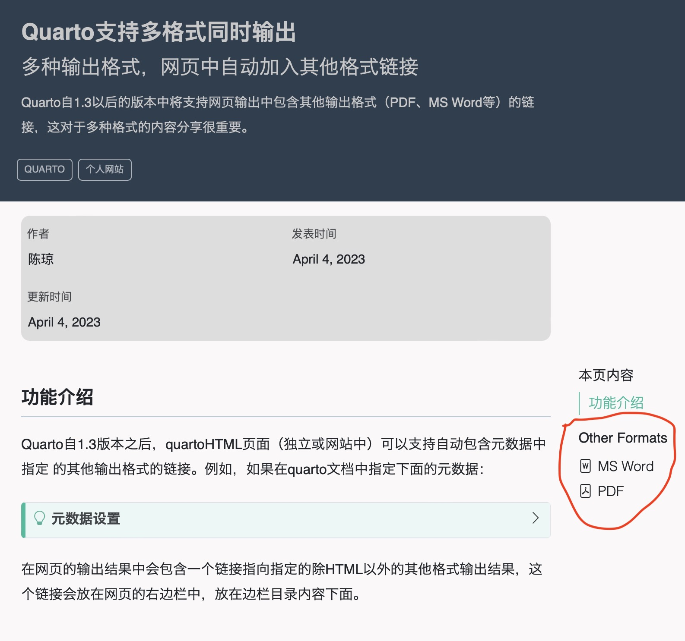
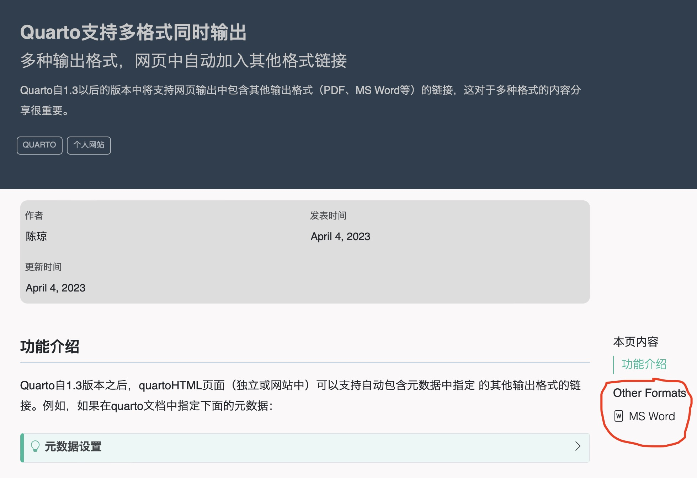

Quarto支持多格式同时输出
多种输出格式，网页中自动加入其他格式链接
2023年4月4日
quarto
个人网站
Quarto自1.3以后的版本中将支持网页输出中包含其他输出格式（PDF、MS Word等）的链接，这对于多种格式的内容分享很重要。
1 功能介绍
Quarto自1.3版本之后，quartoHTML页面（独立或网站中）可以支持自动包含元数据中指定 的其他输出格式的链接。例如，如果在quarto文档中指定下面的元数据：
元数据设置
---
title: "Quarto支持多格式同时输出"
subtitle: "多种输出格式，网页中自动加入其他格式链接"
description: |
Quarto自1.3以后的版本中将支持网页输出中包含其他输出格式（PDF、MS Word等）的链接，这对于多种格式的内容分享很重要。
categories:
- quarto
- 个人网站
date: 2023-04-04
date-modified: last-modified
draft: false
toc: true
mainfont: "Hiragino Sans GB"
format:
html: default
docx: default
pdf:
documentclass: scrartcl
---在网页的输出结果中会包含一个链接指向指定的除HTML以外的其他格式输出结果，这个链接会放在网页的右边栏中，放在边栏目录内容下面。
2 指定显示链接的格式
显示链接到其他格式是默认的，但是我们可以通过在YAML里设置format-links来控制它是否显示，甚至可以指定哪种具体的格式可以显示出来。

3 隐藏所有链接
如果我们只想输出多种格式，但是不想在右侧边栏中显示他们的链接，可以通过下面的设定来实现。
4 在项目水平上控制显示格式
在一个Quarto项目中，为了控制其中一个文件夹内所有quarto文档的显示格式，我们可以在这个文件夹的根目录下的_metadata.yml文件中设置format或format-links选项，如果该文件夹中没有_metadata.yml文件，我们可以新建一个该名称的文件。
_metadata.yml
format:
html:
toc: true
docx: default
pdf: default如果你想在整个Quarto项目中设置统一的显示格式，那么我们就可以在Quarto项目的根目录下的_quarto.yml文件中设置format和format-links选项，从而在项目水平上设置输出格式以及链接的格式内容。如果你选择在_quarto.yml文件中设置输出格式，那么也意味着这个Quarto项目内的所有quarto文档均输出你所指定的格式。
_quarto.yml
format:
html:
toc: true
docx: default
pdf: default5 预览版本的Quarto
预览版本的Quarto可以在下面的链接中进行下载使用https://quarto.org/docs/download/，这个链接中也列出了最新版本Quarto的一些新的特性，如果你想试试最新Quarto支持的功能，可以尝试下载使用哈。